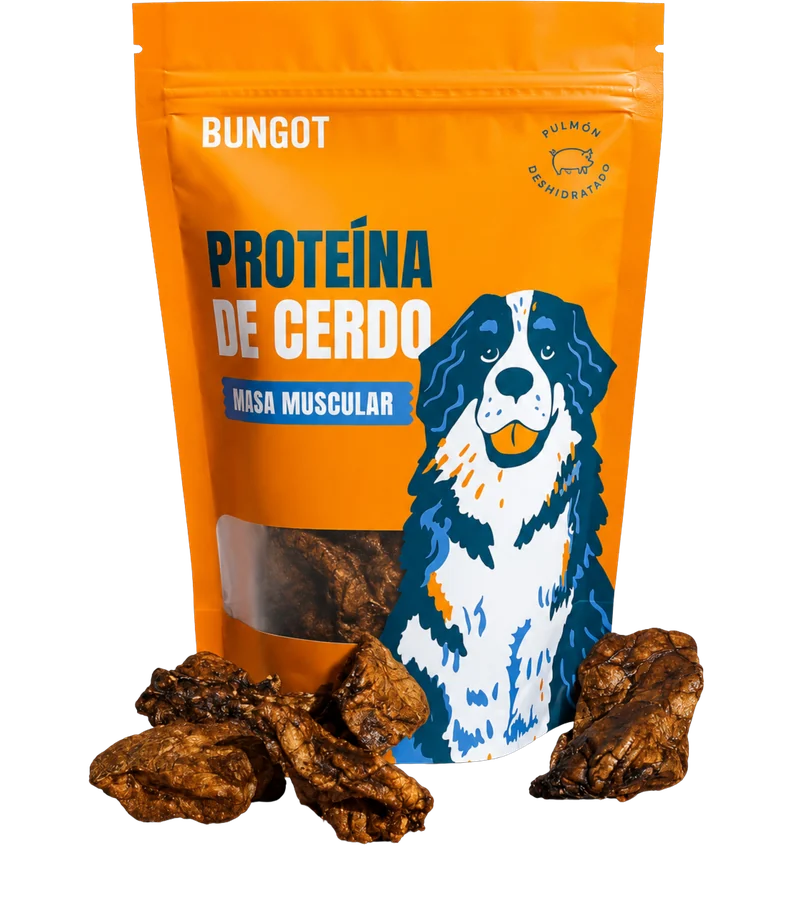
Para perros · Masa muscular
Pulmón de cerdo
40 g de pulmón de cerdo deshidratado. Proteína real para la masa muscular de tu perro.
- Alta proteína
- Masa muscular
- 40 g
$ 70.00

40 g de pulmón de cerdo deshidratado. Proteína real para la masa muscular de tu perro.
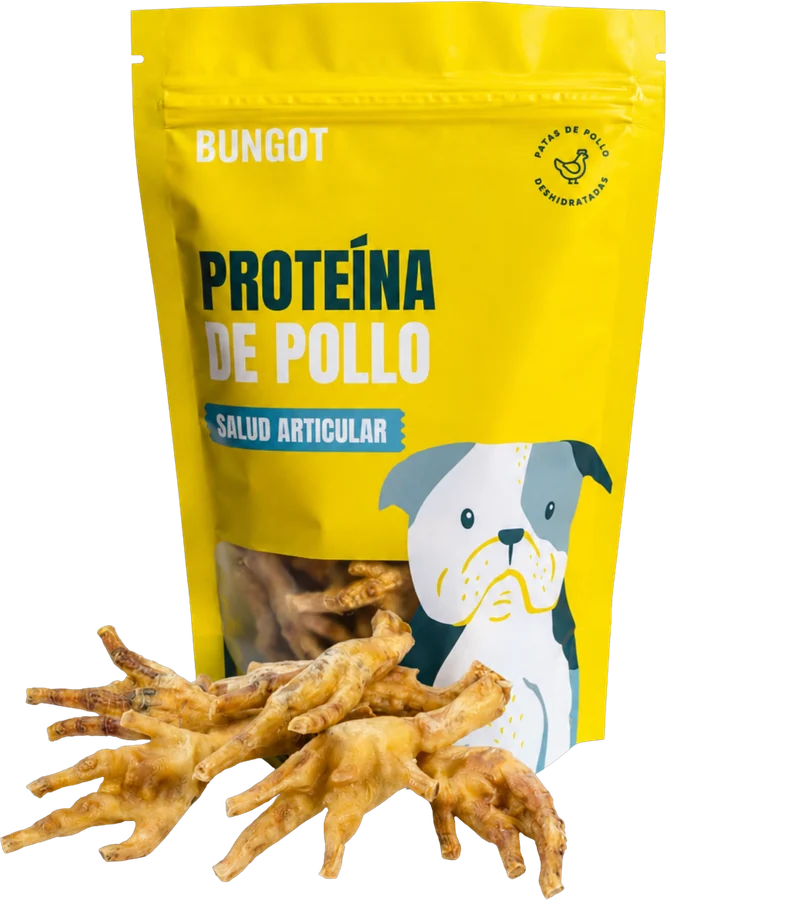
14 piezas de patas de pollo deshidratadas. Masticado largo que acompaña sus articulaciones.
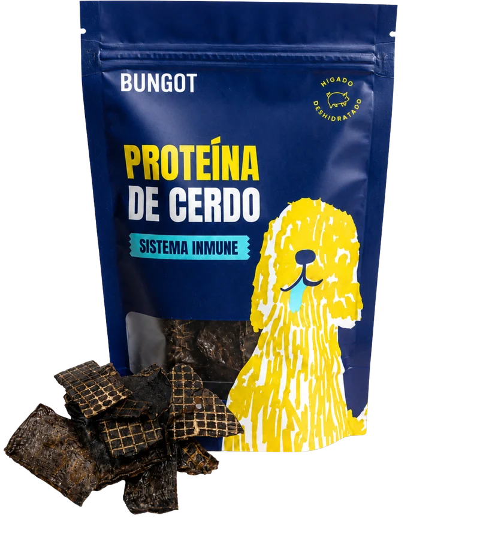
80 g de hígado de cerdo deshidratado. Un solo ingrediente para su sistema inmune.
Proteína real, deshidratada en lotes chicos. Un solo ingrediente y nada más — sin conservadores, sin rellenos, sin letra chica.
Comprar ahora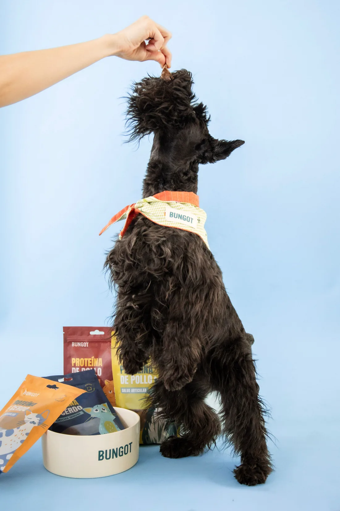
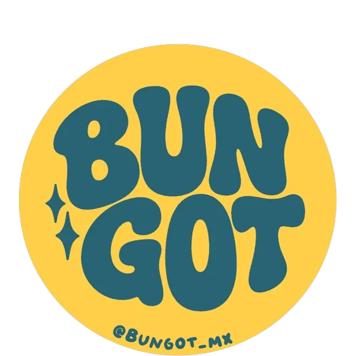
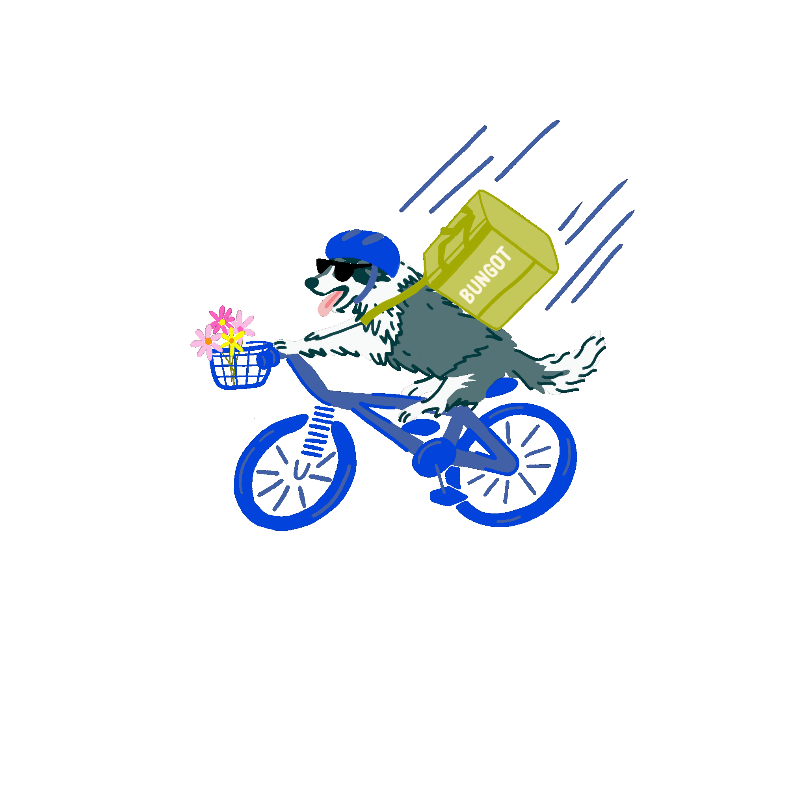
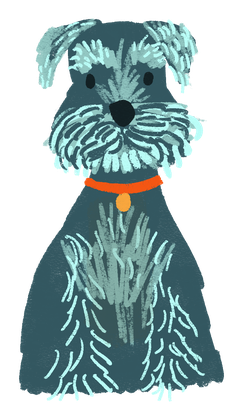
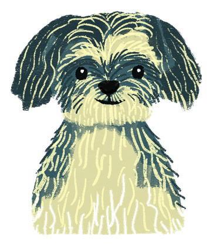
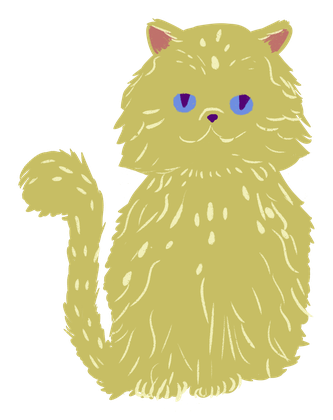
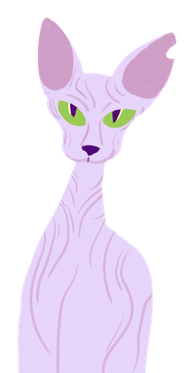
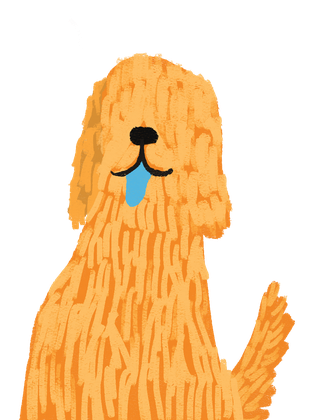
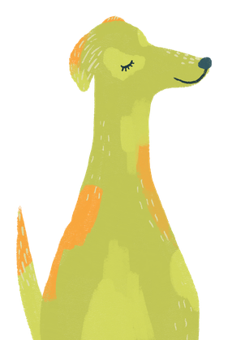
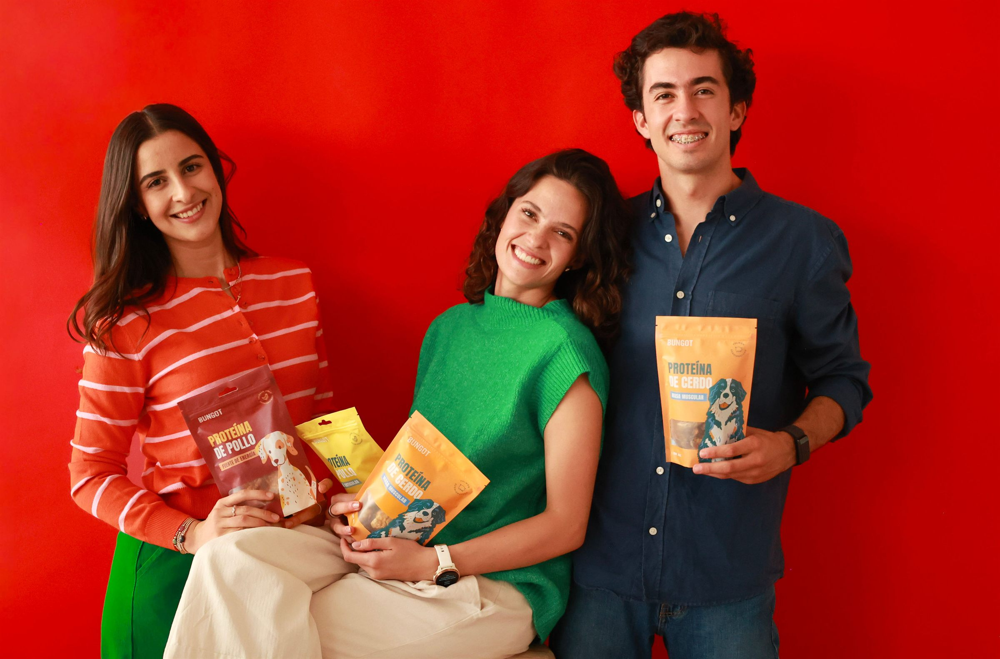